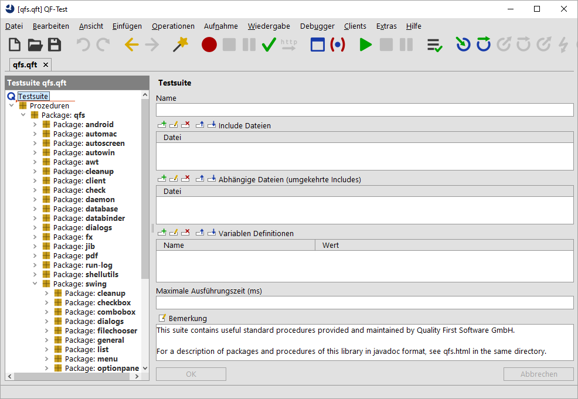

| Version 6.0.3 |
Zusätzlich zum Einfügen von Prozeduraufrufen aus der Standardbibliothek ist es hilfreich, einen Blick darauf zu werfen, wie Funktionen implementiert und organisiert sind.
qfs.qft, die sich im Verzeichnis
qftest-6.0.3/include Ihrer QF-Test Installation
befindet.
|
|  | ||
|
| Abbildung 16.1: Die Standardbibliothek | ||
Sie sehen ein Haupt-Package qfs, das die spezifischen Packages
umschließt. Das qfs Package hilft dabei, die Prozeduren leicht als solche
der Standardbibliothek zu identifizieren.
In fast allen Prozeduren unserer Bibliothek werden Sie die Verwendung der
Variable $(client) bemerken. Dies ist ein Standardmechanismus, um
Testsuiten unabhängig von einem spezifischen SUT zu gestalten. Für die
Benutzung der Standardbibliothek wird vorausgesetzt, dass ein gültiger
Wert für $(client) gesetzt wird, bevor eine ihrer Prozeduren verwendet
werden kann.
| Letzte Änderung: 6.9.2022 Copyright © 2002-2022 Quality First Software GmbH |